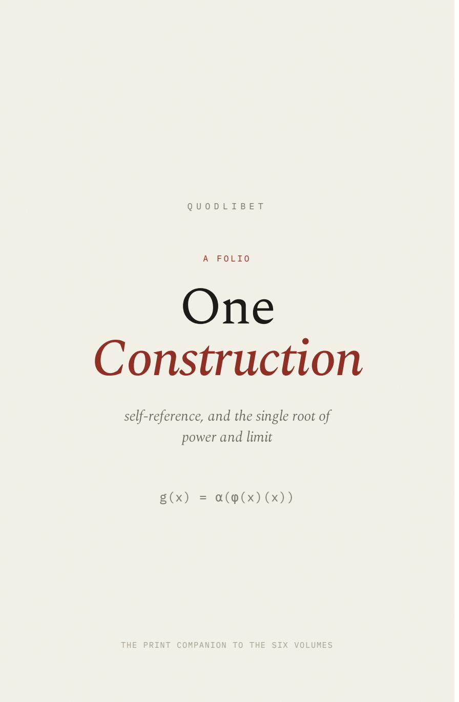
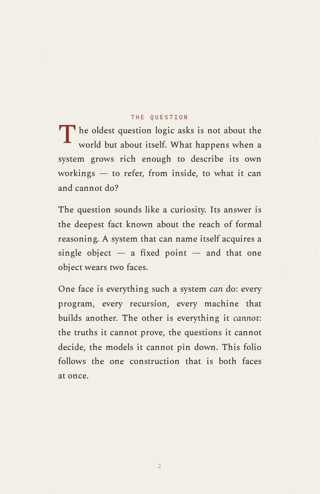
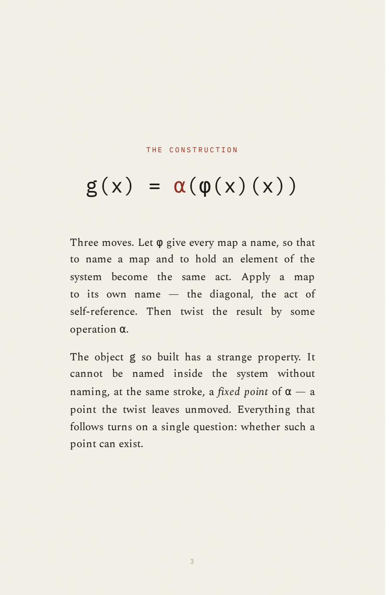
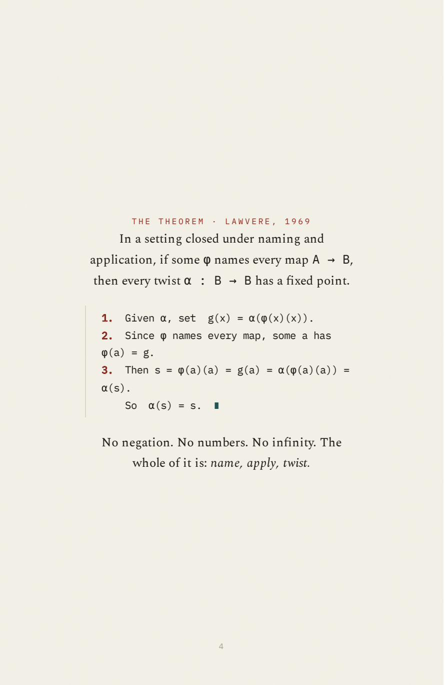
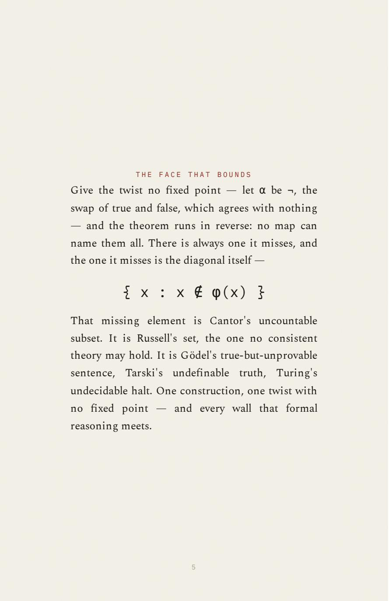
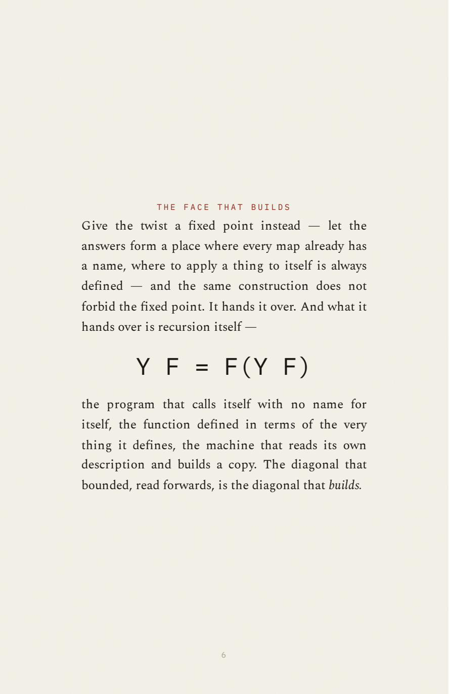
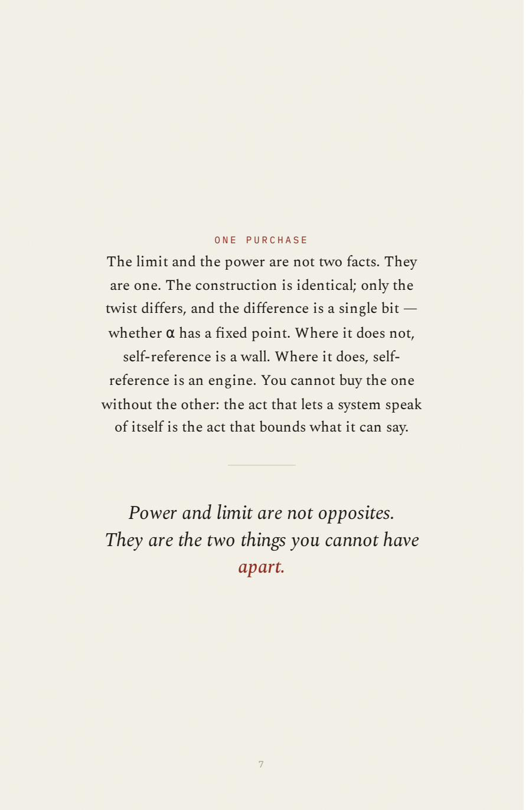
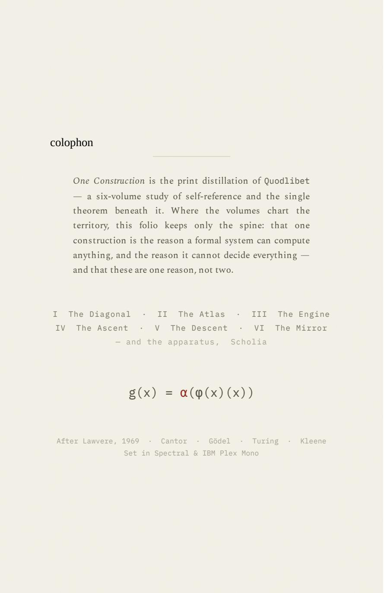

<!doctype html><html lang="en"><head><meta charset="utf-8"><meta name="viewport" content="width=device-width,initial-scale=1"><title>One Construction — Collected Page Images</title><style>body{margin:0;background:#f4f1e8;color:#1a1815;font-family:Georgia,serif;line-height:1.6}main{max-width:72rem;margin:3rem auto;padding:0 clamp(1.2rem,4vw,3rem)}h1{font-weight:400;font-size:clamp(2.4rem,6vw,4.2rem);line-height:1.1;margin:.5rem 0 1rem}a{color:#8f2d23;text-underline-offset:3px}.label{font-variant:small-caps;letter-spacing:.08em}.intro{max-width:48rem}.links,.pages{display:flex;flex-wrap:wrap;gap:.6rem 1.3rem;margin:1.2rem 0}.page{margin:3rem 0;padding-top:1.5rem;border-top:1px solid #ded7c7;scroll-margin-top:1rem}.page h2{font-weight:400}.page img{display:block;width:100%;height:auto;margin:1rem auto;background:#fff}.page figure{margin:1rem 0}.page figcaption{font-size:.95rem;color:#565147}.page details{margin-top:1.4rem}.page summary{cursor:pointer}pre{white-space:pre-wrap;overflow-wrap:anywhere;font-family:Georgia,serif;font-size:1rem;padding:1rem;background:#ebe6db}footer{margin:3rem 0;padding-top:1rem;border-top:1px solid #ded7c7}.format{font-size:.95rem;color:#565147}</style><link rel="stylesheet" href="../../assets/edition.css"></head><body><a class="qe-skip" href="#qe-reading">Skip to the reading</a><nav id="qe-nav" aria-label="Edition navigation"><a class="qe-brand" href="../../index.html">Quodlibet</a><div class="qe-navlinks"><a href="../../the-lathe.html#instrument">The Lathe</a><a href="../../the-mirror.html">The Mirror</a><a href="../../library.html">Full collection</a></div></nav><main id="qe-reading" tabindex="-1"><p class="label">Collected folio · eight pages</p><h1>One Construction</h1><p class="intro">The eight collected page images and their OCR preserve the folio. Its extracted wording matches the original PDF apart from one hyphen/control-character extraction difference. Both forms remain available.</p><p class="intro format">The recovered collected file is a ZIP containing page images and OCR text, despite its historical .pdf filename. This reader displays the embedded images unchanged, with their OCR available below each page.</p><div class="links"><a href="one-construction-image-text.zip" download>Download the original image/OCR ZIP</a><a href="../../original/one-construction.pdf">Original eight-page PDF</a><a href="source-manifest.json">Source package manifest</a></div><nav class="pages" aria-label="Pages"><a href="#page-1">Page 1</a><a href="#page-2">Page 2</a><a href="#page-3">Page 3</a><a href="#page-4">Page 4</a><a href="#page-5">Page 5</a><a href="#page-6">Page 6</a><a href="#page-7">Page 7</a><a href="#page-8">Page 8</a></nav><section class="page" id="page-1"><h2>Page 1</h2><figure><a href="1.jpeg"></a><figcaption>Original embedded image · 896 × 1372 pixels. <a href="1.jpeg">Open the source image at native size</a>. The browser may fit it to the window; the saved image is unchanged.</figcaption></figure><details><summary>OCR text · page 1</summary><pre>Q U O D L I B E T
A F O L I O
One
Construction
self-reference, and the single root of
power and limit
g(x) = α(φ(x)(x))
THE PRINT COMPANION TO THE SIX VOLUMES</pre><a href="1.txt">Download the unchanged OCR text</a></details></section><section class="page" id="page-2"><h2>Page 2</h2><figure><a href="2.jpeg"></a><figcaption>Original embedded image · 896 × 1372 pixels. <a href="2.jpeg">Open the source image at native size</a>. The browser may fit it to the window; the saved image is unchanged.</figcaption></figure><details><summary>OCR text · page 2</summary><pre>T H E Q U E S T I O N
T
he oldest question logic asks is not about the
world but about itself. What happens when a
system grows rich enough to describe its own
workings — to refer, from inside, to what it can
and cannot do?
The question sounds like a curiosity. Its answer is
the deepest fact known about the reach of formal
reasoning. A system that can name itself acquires a
single object — a fixed point — and that one
object wears two faces.
One face is everything such a system can do: every
program, every recursion, every machine that
builds another. The other is everything it cannot:
the truths it cannot prove, the questions it cannot
decide, the models it cannot pin down. This folio
follows the one construction that is both faces
at once.
2</pre><a href="2.txt">Download the unchanged OCR text</a></details></section><section class="page" id="page-3"><h2>Page 3</h2><figure><a href="3.jpeg"></a><figcaption>Original embedded image · 896 × 1372 pixels. <a href="3.jpeg">Open the source image at native size</a>. The browser may fit it to the window; the saved image is unchanged.</figcaption></figure><details><summary>OCR text · page 3</summary><pre>T H E C O N S T R U C T I O N
g(x) = α(φ(x)(x))
Three moves. Let φ give every map a name, so that
to name a map and to hold an element of the
system become the same act. Apply a map
to its own name — the diagonal, the act of
self-reference. Then twist the result by some
operation α.
The object g so built has a strange property. It
cannot be named inside the system without
naming, at the same stroke, a fixed point of α — a
point the twist leaves unmoved. Everything that
follows turns on a single question: whether such a
point can exist.
3</pre><a href="3.txt">Download the unchanged OCR text</a></details></section><section class="page" id="page-4"><h2>Page 4</h2><figure><a href="4.jpeg"></a><figcaption>Original embedded image · 896 × 1372 pixels. <a href="4.jpeg">Open the source image at native size</a>. The browser may fit it to the window; the saved image is unchanged.</figcaption></figure><details><summary>OCR text · page 4</summary><pre>T H E T H E O R E M · L A W V E R E , 1 9 6 9
In a setting closed under naming and
application, if some φ names every map A → B,
then every twist α : B → B has a fixed point.
1. Given α, set g(x) = α(φ(x)(x)).
2. Since φ names every map, some a has
φ(a) = g.
3. Then s = φ(a)(a) = g(a) = α(φ(a)(a)) =
α(s).
So α(s) = s. ∎
No negation. No numbers. No infinity. The
whole of it is: name, apply, twist.
4</pre><a href="4.txt">Download the unchanged OCR text</a></details></section><section class="page" id="page-5"><h2>Page 5</h2><figure><a href="5.jpeg"></a><figcaption>Original embedded image · 896 × 1372 pixels. <a href="5.jpeg">Open the source image at native size</a>. The browser may fit it to the window; the saved image is unchanged.</figcaption></figure><details><summary>OCR text · page 5</summary><pre>T H E F A C E T H A T B O U N D S
Give the twist no fixed point — let α be ¬, the
swap of true and false, which agrees with nothing
— and the theorem runs in reverse: no map can
name them all. There is always one it misses, and
the one it misses is the diagonal itself —
{ x : x ∉ φ(x) }
That missing element is Cantor&#x27;s uncountable
subset. It is Russell&#x27;s set, the one no consistent
theory may hold. It is Gödel&#x27;s true-but-unprovable
sentence, Tarski&#x27;s undefinable truth, Turing&#x27;s
undecidable halt. One construction, one twist with
no fixed point — and every wall that formal
reasoning meets.
5</pre><a href="5.txt">Download the unchanged OCR text</a></details></section><section class="page" id="page-6"><h2>Page 6</h2><figure><a href="6.jpeg"></a><figcaption>Original embedded image · 896 × 1372 pixels. <a href="6.jpeg">Open the source image at native size</a>. The browser may fit it to the window; the saved image is unchanged.</figcaption></figure><details><summary>OCR text · page 6</summary><pre>T H E F A C E T H A T B U I L D S
Give the twist a fixed point instead — let the
answers form a place where every map already has
a name, where to apply a thing to itself is always
defined — and the same construction does not
forbid the fixed point. It hands it over. And what it
hands over is recursion itself —
Y F = F(Y F)
the program that calls itself with no name for
itself, the function defined in terms of the very
thing it defines, the machine that reads its own
description and builds a copy. The diagonal that
bounded, read forwards, is the diagonal that builds.
6</pre><a href="6.txt">Download the unchanged OCR text</a></details></section><section class="page" id="page-7"><h2>Page 7</h2><figure><a href="7.jpeg"></a><figcaption>Original embedded image · 896 × 1372 pixels. <a href="7.jpeg">Open the source image at native size</a>. The browser may fit it to the window; the saved image is unchanged.</figcaption></figure><details><summary>OCR text · page 7</summary><pre>O N E P U R C H A S E
The limit and the power are not two facts. They
are one. The construction is identical; only the
twist differs, and the difference is a single bit —
whether α has a fixed point. Where it does not,
self-reference is a wall. Where it does, selfreference is an engine. You cannot buy the one
without the other: the act that lets a system speak
of itself is the act that bounds what it can say.
Power and limit are not opposites.
They are the two things you cannot have
apart.
7</pre><a href="7.txt">Download the unchanged OCR text</a></details></section><section class="page" id="page-8"><h2>Page 8</h2><figure><a href="8.jpeg"></a><figcaption>Original embedded image · 896 × 1372 pixels. <a href="8.jpeg">Open the source image at native size</a>. The browser may fit it to the window; the saved image is unchanged.</figcaption></figure><details><summary>OCR text · page 8</summary><pre>colophon
One Construction is the print distillation of Quodlibet
— a six-volume study of self-reference and the single
theorem beneath it. Where the volumes chart the
territory, this folio keeps only the spine: that one
construction is the reason a formal system can compute
anything, and the reason it cannot decide everything —
and that these are one reason, not two.
I The Diagonal · II The Atlas · III The Engine
IV The Ascent · V The Descent · VI The Mirror
— and the apparatus, Scholia
g(x) = α(φ(x)(x))
After Lawvere, 1969 · Cantor · Gödel · Turing · Kleene
Set in Spectral &amp; IBM Plex Mono</pre><a href="8.txt">Download the unchanged OCR text</a></details></section><footer><a href="../../library.html#edition-contents">Return to Quodlibet</a> · </footer></main></body></html>
